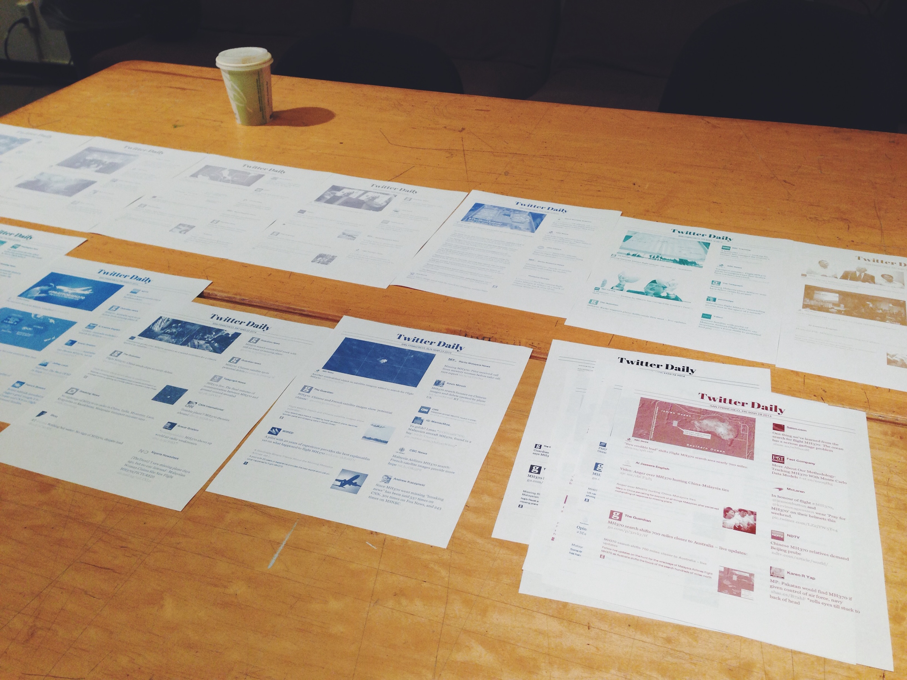

The complete series can be found here: http://missingflight.tumblr.com/
I was highly focused on the news of the missing MH370 flight in March, 2014. I haven’t paid this much attention to a news event for a long time. Every day, checking the news was the first thing to do when I woke up. Every day something was reported, and people’s moods changed, attention shifted, and hope dwindled, as I observed from Twitter.
One day a friend said, “You know what’s good about newspaper? You get to feel that day if you have the newspaper at hand. Not so much with digital media.” Then it occurred to me that it would be meaningful to print those tweets on paper, like newspaper. Twitter refreshes every second, and this minute’s Twitter is different from last minute’s. People are focusing on what’s going on right now, and the past is soon neglected. However, a newspaper preserves that significance, and tangibility even decades after the event.
Thus I decided to make a series of newspapers made from tweets, with fading indicating time, and color indicating collective mood. I wrote a web app with Twitter API to automatically generate newspaper layout day by day. Then I exported the images, and retouched them with fading and color tints. The final print was done with normal laser printer and print paper, due to constraint of equipment and techniques.